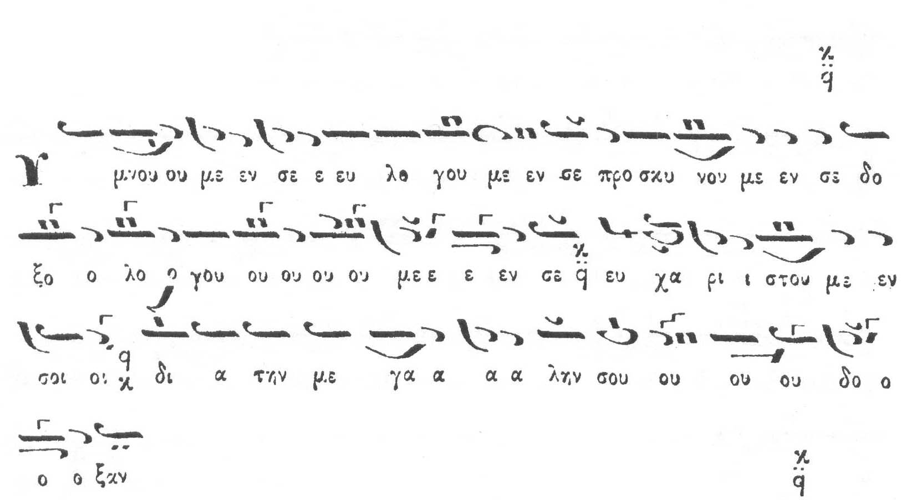

Δοξολογία Πέτρου Βυζαντίου Ήχος Πλάγιος του Πρώτου Τετράφωνος / Doxology of Petros
Vyzantios Protopsaltis in Plagal First Mode Tetraphonos
Μιά πολύ γνωστή δοξολογία / Α well known doxology
Ηχογραφήσεις / Recordings
Thrasyvoulos Stanitsas [
mp3, 1.6 Mb], Θεσσαλονικη αρχες της δεκαετιας του 1960 , 9 Σεπτεμβριου (Κυριακη Γου ηχου , Εωθινον Αον) / Thessaloniki, early 1960s, 9 Sept, Sunday of Third Mode, First Eothinon.
This recording offered by Vangelis Linardakis. An earlier incomplete recording of
this doxology was offered by a friend of Analogion who prefers to stay anonymous
with the following comments in Greek: "...εκείνο που μου κάνει εντύπωση είναι το
πόσο διαφέρει το κείμενο του Κωνσταντίνου από αυτό της Ζωής. Σας αποστέλλω επισυνημμένως
την δοξολογία αυτή ψαλλόμενη από τον Θρ. Στανίτσα. Δυστυχώς δεν είναι πολύ καλή
ηχογράφηση. Αν και προφανώς δεν ψάλλει από το βιβλίο της Ζωής, αυτά που ψάλλει μοιάζουν
πολύ περισσότερο με το κείμενο της Ζωής. Τελικά ποιος έχει δίκαιο και ποιος κάνει
τις διασκευές; Και γιατί στο τέλος να κατηγορούνται οι σύγχρονοι (Καραμάνης κ.ά.),
οι οποίοι κάνουν δικές τους διασκευές;"
Alekos Vardas and
Georgios Michalakis
[
mp3]
(from graeca.mrezha.net, offered by Georgios Michalakis).
Georgios Michalakis [
mp3] including different versions of various theseis. Offered by Georgios Michalakis.
Please send us any other recordings of this Doxology that you may have which would
be worth comparing/studying.
Συζήτηση / Discussion
From byzantinechant forum:
What is it that makes it different than Iakovos' Doxology in First Tetraphonos Mode
[
html] so that Byzantios' is Plagal whereas the other is labelled First Tetraphonos?
Dimitri Koubaroulis: Iakovos' Doxology starts high from
the Authentic mode (KE) and ends in its Plagios (PA). Byzantios' one starts from
Plagios (PA) and ends in the Authentic (KE).
Ioannis Arvanitis: In brief: First, this doxology is clearly
labeled "Protos Tetraphonos" in the manuscripts. Because of the little use of this
mode in this period and of the great similarities of the musical phrases in this
doxology to the formulas of sticheraric Plagal 1st, it was relabeled to Pl. 1st
(the opposite happened with "Osoi eis Xriston").
Dimitri Koubaroulis: Interesting. So from what you are
saying, Byzantios wrote it as First Mode Tetraphonos and Stephanos/Ioannis relabelled
it to Plagal First Tetraphonos in their printed books (perhaps following a tradition
of their predecessors). So, Yianni, if we wanted to be historically correct we should
label the doxology as First mode Tetraphonos. Apart from that though, in terms of
the melody, what is the right label? If it sounds and moves like Plagal First mode,
then it should have been originally labelled as such and the error is with the manuscripts
and not with the printed books. If on the other hand is wrongly labelled as Plagal,
what would the justification be? The main difference I see in the two doxologies
is that Iakovos' does endings on PA (the basis of the Plagal) whereas Petros does
endings on KE (the basis of the Authentic). Does that tell us anything?
Μουσικά Κείμενα / Scores
The score below if from Konstantinos Protopsaltis' Anthologia, kindly scanned
by Shota Gugushvili.
D. Koubaroulis: Notice the descent to Plagal First Mode
from low KE.

Here the ending martyria should be KE, not PA (typo)

Very nice and artistic modulation by Konstantinos in this one..